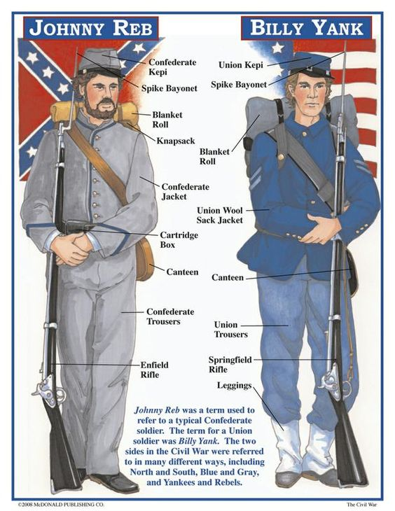

Welcome to the Confederacy site! Here, you may find different resources, for example battle plans, and training about different things, and of how to keep clean
To find some of our resources, please scroll below.
Our Battle Plan
The plan we are using is to get Great Britain to help us, since we supply a lot of cotton to them, but hopes are lowering, mainly because lately, Britain hasn't been accepting our help requests.
Despite having low hopes of getting help, we will still send out help requests to other countries and ask them for help.
How to stay healthy during the war
To stay healthy during wartime, it is important that you stay healthy, or you will die from illness.
One way you can be healthy is staying away, at least 3 feet away from other people who are sick, and make sure you have sufficient clothing at all times, or you will get sick, either from hypothermia, or from stroke.
Make sure you do not drink contaminated water, and only eat food raw if you know it is safe. If you are not sure, ask a general, such as our southern gentleman, Robert E. Lee.
What to expect when fighting in the war.
When fighting in the war, you have to expect the worst, especially when you are in a a battle, such as Antietam.
You will also get dirty during the war, so it is dire that you at least try to stay as clean as possible, especially when you are in those long 3-day battle situations.
Our and Union men.
Our and Union uniforms.
Major battles we have fought and won in the war
Our major battles we have fought in and won include:
Battle of Bull Run
Battle of Fort Sumter
Battle of Chickamauga
Battle of Manassas
Some wepons you may see in the war
In the picture above about uniforms, you saw one famous gun, the Bayonet, but there are lots of other weapons that people use in the war.
Not only do people use guns, but some use swords and knives to fight in the war.
Below are some of the wepons you may see in the war.
M1842 US Musket (.69 calibers).
M1861 US Rifled Musket (.58 calibers).
M1853 Enfield Rifled Musket (.577 calibers).
Spencer Carbine
Sharpe Carbine
Colt Revolver
Remington Revolver